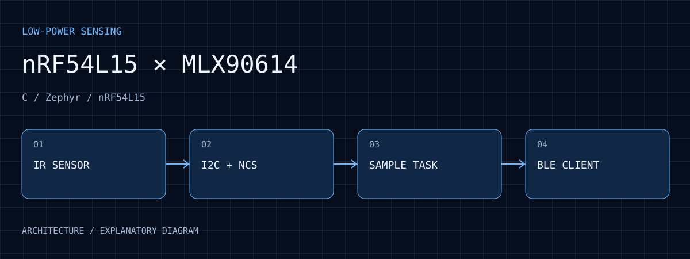

Available implementation
Public source includes pin configuration, BLE characteristics, periodic sampling and immediate measurement control.
nRF54L15 × MLX90614
Zephyr/nRF Connect SDK infrared-temperature firmware for XIAO nRF54L15, with BLE data delivery, 60-second sampling, and immediate measurements requested from a phone.

01 / PURPOSE
Schedule intermittent sensing and low-power waiting while retaining phone connectivity and control.
02 / ARCHITECTURE
MLX90614 ambient and object temperatures are read on i2c22, with SDA/SCL mapped to P1.10/P1.11 in the overlay.
A Zephyr thread waits on a semaphore timeout and reads once for a scheduled or phone-triggered event.
Temperature, status and control characteristics separate measurement notifications from immediate-sample requests.
I2C resumes around reads and suspends afterward. Diagnostics are off by default; BLE remains available during System ON idle.
03 / WORKFLOW
Check the I2C device, register BLE services and wait for a client.
The normal period is 60 seconds. A sample or measure write wakes the task without changing that setting.
Resume I2C, read the sensor and expose an ASCII Celsius payload to the phone.
Suspend I2C and block the thread so the operating system can idle while keeping BLE available.
04 / EVIDENCE
Public source includes pin configuration, BLE characteristics, periodic sampling and immediate measurement control.
LOW_POWER_ANALYSIS records approximately 5.02 V and 3.5 mA in an earlier setup. This is not a post-optimization measurement of the current revision.
0.66 Wh divided by 720 hours gives about 0.92 mW for a 30-day target. Usable battery energy depends on capacity and loading conditions.
Architecture, workflow and inspectable records explain the outcomes. No photograph or screenshot meeting the presentation criteria has been selected for this page.
05 / ANALYSIS
Changing a 10-second interval to 60 seconds reduces read events, but radio activity, sensor standby and board power circuitry may still dominate. Compare revisions at the same supply point and settings.
Immediate phone commands require BLE availability. Blocking waits and System ON idle support that workflow; lifetime estimates must include advertising, connection and acquisition states.
Object and ambient temperatures have different meanings. Distance, field of view and target surface affect readings, so a successful transfer alone does not establish calibration.
06 / REPRODUCE
07 / LIMITS
System ON idle retains BLE; this is not System OFF. Battery-life estimates, measured current, and measurement accuracy must be interpreted separately.
08 / SOURCES
Selected images retain their visual content. Captions distinguish prototype photographs, application interfaces, archived records, analysis and simulations.